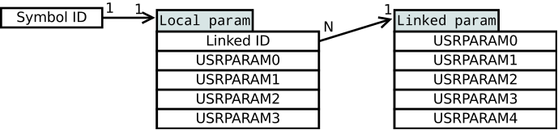

Magmio API
API overview
Magmio application programming interface (API) allows to access and control Magmio application through high-level interface implemented in C++11. The api should be used as a dynamic shared library and accessed through Magmio:: namespace.
The most important functions of the API are:
- Initialization of a FPGA card and Magmio application
- Reading/writing of global, persymbol and pergroup parameters
- Reading messages from Decoder, Book, Enhanced Top of Book and Strategy Engine streams
- Reading events generated by Status channel and Order Sender in the card
- Pre-Trade Risk Check configuration
- Strategy Prefilter configuration
- Managing orders
Detailed information about API class can be found in Doxygen documentation.
API examples
Magmio package contains an example application which shows how to use API to initialize Magmio platform, modify all parameters (global, persymbol, pergroup) and read output events/messages from Decoder, Status, Order Sender, Book, Enhanced Top of Book and Strategy Engine streams (channels). It also contains an example of using the Order Sender.
Structure of Magmio examples:
- ~/my-local/examples/api-example/ - Directory with a general example application of using Magmio API
- book_channel.cpp/.h - Reading messages from Book channel.
- decoder_stream.cpp/.h - Reading messages from Decoder stream.
- etob_stream.cpp/.h - Reading messages from Enhanced Top of Book.
- global_params.cpp/.h - Reading/writing global parameters.
- init.cpp/.h - Magmio platform initialization.
- main.cpp - Main application which links all files into one binary application. Magmio platform can be controlled using this application with appropriate command-line parameters.
- order_sender.cpp/.h - Order Sender example code.
- pergroup_params.cpp/.h - Reading/writing pergroup parameters.
- persymbolro_params.cpp/.h - Reading/writing persymbolro parameters.
- persymbolrw_params.cpp/.h - Reading/writing persymbolrw parameters.
- risk_check.cpp/.h - Setting/reading Pre-Trade Risk Check module parameters.
- status_channel.cpp/.h - Reading events from Status channel.
- strategy_prefilter.cpp/.h - Setting/reading Strategy prefilter module parameters.
- strategy_stream.cpp/.h - Reading messages from Strategy Engine stream in blocking/non-blocking mode.
API-Example
Following text shows how to initialize Magmio platform using api-example application. Respective strategies build directories should contain firmware for this example to work. You can synthesise your own firmware using one of the strategies provided in Magmio package. In the example we use fair-price strategy from a local copy of Magmio created for Nasdaq ITCH5 market.
Required (mandatory) parameters:
-f <firmware_file>- loads firmware into the card-m <mapping_file>- loads mapping file into the card-c <config_file>- loads configuration for Magmio application (packet filter rules, network interface settings, order sender settings,…)
$ cd ~/my-local/examples/api-example/
$ make
$ ./main -f ../../strategies/fair-price/build/fair-price_<build_number>.bit
-m ../../configs/itch5/mapping.txt
-c ../../configs/itch5/api.xml
User parameters
Application can also be used for loading global, persymbolro, persymbolrw and pergroup parameters into the card. Use command-line parameters -g <global_file>, -l <persymbolro_file>, -r <persymbolrw_file> and -u <pergroup_file> to load parameters in the card.
To perform basic tests of the parameters, use command-line parameters -G, -L, -R or -U. These parameters show how to manually write parameters into the card and how to read them back.
Strategy Engine consistency check
The strategy used in the Strategy Engine can be verified using the -C <strategy_file> command-line parameter. If this check succeeds, the consistency between the strategy source file and Strategy Engine is confirmed. This parameter is optional but recommended to use.
Reading outputs
Example application also shows how to read output messages and events from Decoder, Status, Book, Enhanced Top of Book and Strategy Engine streams (channels). Use optional command-line parameters -d, -E, -w, -e or -s/S. Reading output streams may negatively affect the performance of the card especially when the output is printed on screen or to file. It is caused by the I/O operations in general, therefore we recommend to fine tune your application with stream reading enabled in non production environment, where possibly lower performance is not an issue. For the best performance in production environment it is recomended to disable any stream reading.
Note
It may happen that the CPU is used at 100% when running the application. The reason behind is that internally, we use spin loops to achieve minimum possible latency.
Additional information (Info Channel) is added to almost all of the above mentioned outputs (except messages from Book channel):
- Sending Time - Timestamp assigned by the card upon sending data to the software (DMA)
- Hardware Time - Timestamp assigned by the card upon packet arrival
- Exchange Time - Timestamp assigned by the exchange
- Flags - Internal flags, e.g. end of packet signalization
- Feed Type - Type of data feed (from api.xml)
- Channel ID - Number of packet filter rule that matched this packet
- Packet seqnum - Sequence number of the packet that caused this update
- Message seqnum - Sequence number of the message that caused this update
- Decoder seqnum - Sequence number of the Decoder message within this packet
- Message type - Message template identification
Order Sender
Example of working with Order Sender is enabled with optional command-line parameter -o <num>. Basic test of sending orders through API is activated using parameter -O <sid>.
Verbosity levels and log file
By default, only errors are displayed on the screen. This behavior can be adjusted by parameter -v <level> to set desired screen verbosity level. Option -V <level> enables logging into a file. Name of the file can be specified by -D argument, otherwise log.txt is used.
Available verbosity levels are:
- 0 - Quiet (no information is displayed)
- 1 - Error (only errors are displayed)
- 2 - Warning (warnings are displayed)
- 3 - Info (displays basic status information)
- 4 - Debug (displays detailed information including application variables values)
Note
Default setting is Error mode at screen and Quiet at file logging.
IGMP, TCP and UDP connection recording
Magmio API can record IGMP, TCP and UDP communication with the market. The record is stored into PCAP file.
Global, persymbolro, persymbolrw and pergroup parameters
Magmio application contains following parameters:
| Type of parameters | Access from software | Access from strategy | Description |
|---|---|---|---|
| global parameters | read/write | read/write | shared among all instruments |
| pergroup parameters | read/write | read/write | shared among multiple instruments with the same group ID |
| persymbolro parameters | read/write | read | private for each instrument |
| persymbolrw parameters | read/write | read/write | private for each instrument |
These parameters are used in trading logic inside of FPGA. Number of parameters can be changed upon request. Every instrument (identified by symbol ID) has a pointer (Group ID) to a memory location where pergroup parameters are stored. There are multiple user parameters for every pointer (Group ID).

All parameters are type of int32_t and are available through Magmio API. Parameters can be set and read through Magmio API methods or initialized from file. On top of that, global, persymbolrw and pergroup parameters can be changed from within the strategy. API methods for initialization and working with parameters are described below:
Global parameters
- Magmio API methods:
api.params.global.setParam(param)- Set single parameterapi.params.global.getParam(param)- Read single parameterapi.params.global.setParams(params)- Set up to all parametersapi.params.global.getParams(params)- Read up to all parametersapi.params.global.getNumParams()- Returns maximum number of parameters supported in firmware- See Doxygen documentation and API-Example code for more information
- Initialization from file:
- First column - parameter ID
- Second column - parameter value
- Columns are separated by semicolon
Example of initialization file:
0;1158
1:59856
38;15
127;1024
Persymbolro parameters
- Magmio API methods:
api.params.persymbolro.setParam(symbol_id, param)- Set single parameterapi.params.persymbolro.getParam(symbol_id, param)- Read single parameterapi.params.persymbolro.setParams(symbol_id, params)- Set all parameters assigned to single symbol IDapi.params.persymbolro.getParams(symbol_id, params)- Read all parameters assigned to single symbol IDapi.params.persymbolro.getNumParams()- Returns maximum number of parameters supported in firmware- See Doxygen documentation and API-Example code for more information
- Initialization from file:
- First column - symbol ID
- Second column - parameter value (USRPARAM0)
- Third column - parameter value (USRPARAM1)
- Following columns - Other parameter values (up to persymbolro parameters count)
- Columns are separated by semicolon
Example of initialization file:
38401;7;3128;1024;9889
38402;45;1258;0;0
38403;789;1000;200;1
Persymbolrw parameters
- Magmio API methods:
api.params.persymbolrw.setParam(symbol_id, param)- Set single parameterapi.params.persymbolrw.getParam(symbol_id, param)- Read single parameterapi.params.persymbolrw.setParams(symbol_id, params)- Set all parameters to single symbol IDapi.params.persymbolrw.getParams(symbol_id, params)- Read all parameters from single symbol IDapi.params.persymbolrw.getNumParams()- Returns maximum number of parameters supported in firmware- See Doxygen documentation for more information
- Initialization from file:
- First column - symbol ID
- Second column - parameter value (USRPARAM0)
- Third column - parameter value (USRPARAM1)
- Following columns - Other parameter values (up to persymbolrw parameters count)
- Columns are separated by semicolon
Example of initialization file:
38401;7;3128;1024;9889
38402;45;1258;0;0
38403;789;1000;200;1
The difference between persymbolro and persymbolrw parameters consists in different hardware implementation, which allows persymbolrw parameters to be mutable from within strategy engine. However, keep in mind, that those two are completly different sets of parameters.
Pergroup parameters
- Magmio API methods:
api.params.pergroup.setParam(group_id, param)- Set single parameterapi.params.pergroup.getParam(group_id, param)- Read single parameterapi.params.pergroup.setParams(group_id, params)- Set all parameters assigned to single group IDapi.params.pergroup.getParams(group_id, params)- Read all parameters assigned to single group ID- See Doxygen documentation for more information
- Initialization from file:
- First column - group ID
- Second column - parameter value (USRPARAM0)
- Third column - parameter value (USRPARAM1)
- Following columns - Other parameter values (up to pergroup parameters count)
- Columns are separated by semicolon
- Linking between Symbol ID and Group ID is done using mapping file.
Example of initialization file:
276;0;500;1000;1500;2000
278;2;4;7894;0;45
288;1111;2222;3333;4444;5555